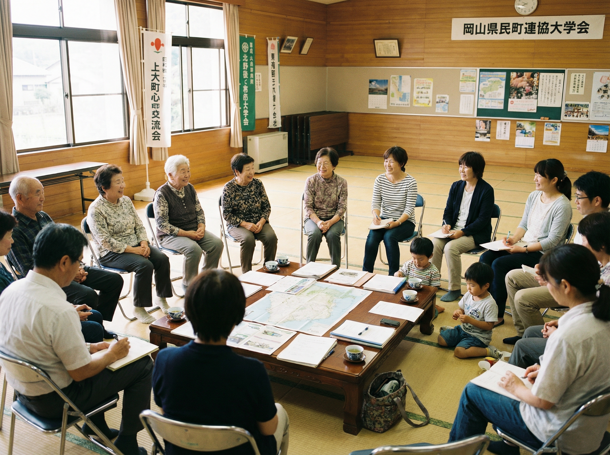

NPO Basics
NPOの基礎知識
NPO（特定非営利活動法人）について、基本的な知識をQ&A形式でわかりやすく解説します。
What is NPO?
NPOとは

NPOとは「Non-Profit Organization（非営利組織）」の略称です。 営利を目的とせず、社会的な課題の解決に取り組む市民団体のことを指します。
1998年に施行された特定非営利活動促進法（NPO法）により、 一定の要件を満たした団体は「特定非営利活動法人（NPO法人）」として 法人格を取得できるようになりました。
NPOは「利益を分配しない」という意味であり、事業収益を得ること自体は問題ありません。 得た収益を社会課題の解決のために再投資することがNPOの特徴です。
FAQ
基礎知識 Q&A
NPOに関するよくある質問にお答えします。
NPO（Non-Profit Organization）は非営利組織全般を指す用語で、国内外を問わず使われます。
一方、NGO（Non-Governmental Organization）は「非政府組織」の略で、主に国際的な活動を行う団体に対して使われることが多い呼称です。
法的な区分ではなく、活動の範囲や文脈によって使い分けられています。
NPO法人を設立するには、10人以上の社員（会員）が必要です。
所轄庁（都道府県または指定都市）に設立認証申請を行い、認証を受けた後、
法務局で法人登記を行います。申請から認証まで通常3〜4ヶ月程度かかります。
特定非営利活動促進法（NPO法）に定められた20分野のいずれかに該当する活動を行う必要があります。
はい、NPO法人も収益事業を行うことができます。
「非営利」とは利益を構成員に分配しないという意味であり、事業として収益を上げること自体は制限されていません。
得られた収益は、団体の目的である社会課題の解決のために使用する必要があります。
NPO法人は特定非営利活動促進法に基づき、所轄庁の認証を受けて設立されます。設立に10人以上の社員が必要で、活動分野も20分野に限定されています。
一般社団法人は一般社団法人法に基づき、2人以上の社員で設立でき、活動分野の制限はありません。
NPO法人は情報公開義務が強く、市民に開かれた運営が求められる点が特徴です。
認定NPO法人とは、NPO法人のうち、一定の基準を満たすものとして所轄庁の認定を受けた法人です。
認定を受けると、寄付者が税制上の優遇措置（寄付金控除）を受けられるようになります。
パブリックサポートテスト（広く市民から支援を受けていること）などの基準を満たす必要があります。
認定NPO法人への寄付は、確定申告により所得税の寄付金控除（所得控除または税額控除）を受けることができます。
また、一部の自治体では住民税の控除対象にもなります。
通常のNPO法人（認定を受けていない法人）への寄付は、原則として税控除の対象外です。
NPOについてもっと知りたい方へ
ご不明な点がございましたら、お気軽にお問い合わせください。